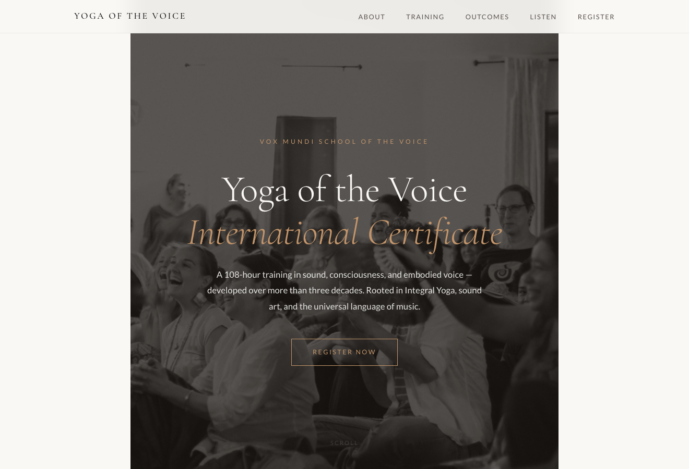
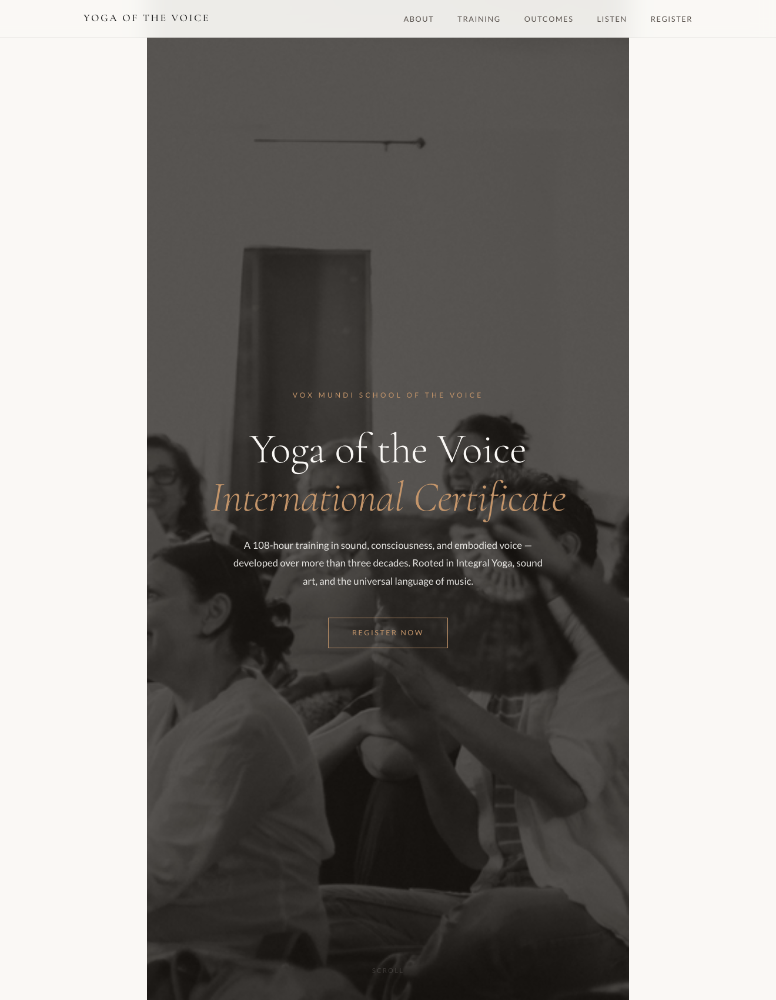

Case study · 2026 · client
Yoga of the Voice
A dedicated landing page for Silvia Nakkach's flagship 108-hour Certificate — built to send serious prospects to now, ahead of a full site rebuild.
In short
- The opportunity
- One flagship offer — a 108-hour Certificate — had no focused page of its own on the broader school site.
- My role
- Design & front-end build, solo — translating the client's AI-assisted draft into a warm, on-lineage page.
- The core constraint
- Honour a thirty-year vocabulary without tipping into wellness-marketing tone, keep the client's own structure, and ship within a week.
- The outcome
- Shipped in ~48 hours; “80% done” on first review; now the school's front door for the Certificate — and the trust that opened a ~15-page engagement.

Overview
A front door for a 30-year practice
Silvia Nakkach has taught the Yoga of the Voice for more than thirty years. Her flagship — a 108-hour Certificate training — is the Vox Mundi School's central offer, but it had no dedicated web presence. I designed and built a landing page she could send to serious prospects immediately, well ahead of the larger WordPress rebuild.
The opportunity
The Certificate deserved a front door of its own
Prospective students were arriving through the broader Vox Mundi site, where the Certificate sits alongside decades of the school's teaching and offerings. It's a rich body of work, and there was an opening to give this one flagship program a single, focused page — something Silvia could send to a serious prospect on its own, with the offer front and centre and easy to take in on a phone.
The hard part wasn't graphic design. It was translating three decades of a specific pedagogical language — Nada Yoga, raga sangeet, the space between tones, Shakti as creative energy — into something a modern web reader could enter without being either alienated or condescended to.
Constraints
Fast, one photo, and her own draft to honour
Silvia wanted it live before the end of the week, and we fit our exchanges around a full teaching schedule. There was one photo — no video, no extra imagery, no testimonials yet. The voice had to honour a thirty-year vocabulary rooted in Indian classical music and contemplative practice, without ever tipping into wellness-marketing tone. And she'd already drafted an HTML structure and organized the copy with Perplexity — her explicit ask was to keep that layout; she liked the clarity of the organization. We also needed a live URL for review before committing to a domain, so there was no permanent hosting at first.
The insight
The client's AI draft was source material, not something to replace
My instinct on any project is to start from scratch — my own information architecture, my own copy. But Silvia had done real thinking with Perplexity: she'd organized the sections, chosen which of her materials to include, and had strong feelings about the clarity of that organization. Working with her draft — inheriting its scaffold, then refining the voice, tightening the offer, and adding depth-on-demand — respected the intellectual work she'd already done, and made the collaboration feel like partnership rather than delivery.
The broader shift: AI is changing what clients arrive with, which changes what design work actually is. Generating structured content from a brief is no longer the scarce skill — clients can do that themselves. The value is translating what they've generated into something that carries the warmth, specificity, and lineage only a human who understands the domain can add.
“It's gorgeous and almost done — 80% done.”
— Silvia Nakkach, after the first review
The craft
Keep her structure, refine the voice, fold away the depth
Two moves did the heavy lifting. I kept Silvia's section organization and worked through the voice line by line — listening for the sentences that carried her own thirty years of weight, keeping those, and letting the more generic, AI-drafted phrasing fall away. And I introduced an accordion pattern for depth-on-demand — “Areas of Study,” “Course Format,” “Recommended Readings” folded behind toggles — so the page could stay calm and inviting while still holding everything a serious prospect needs.

What didn't work
A staging URL that didn't feel like hers
I staged the review build under a subpath of my own domain
(stupender.github.io/yoga-of-the-voice), planning to migrate once we
chose a domain. It worked for review, but the URL didn't read as hers —
Silvia quite reasonably wanted to picture the real address (yogaofthevoice.com
and the like), and my temporary setup made that harder to picture than it should
have been. Next time I'd stage on a real-feeling URL from day one — a placeholder
domain, or a proper preview subdomain — so the first look already feels like a launch.
Outcome
Shipped in 48 hours — and it opened a bigger door
The page shipped in about 48 hours from brief. Silvia's first response was “gorgeous and almost done — 80% done,” with just three concrete edits — nav-link behaviour, mobile contrast and font sizing, and minor text — and no changes to structure or voice. She now sends the URL directly to serious Certificate prospects; it's the school's real front door for that offer while the WordPress rebuild is in progress.
And it became the trust that unlocked a much larger engagement — an ongoing full site consolidation across roughly fifteen pages (The School, Programs, retreats, and the content architecture for the WordPress developer). The landing page was the proof; the school was the scale.
Reflection
Knowing what to keep turned out to be the whole job
When a client can arrive with a full AI-drafted structure, the value I add isn't “I can make a website” — it's taste, editorial judgment, and the translation of the human specifics AI still misses. Silvia's language has weight because she spent thirty years earning it; a generic draft flattens that weight. My job is to notice which sentences carry it, keep them, and let the generic phrasing fall away. And it scales: once she trusted I could do that on the landing page, we could do it across the whole school.